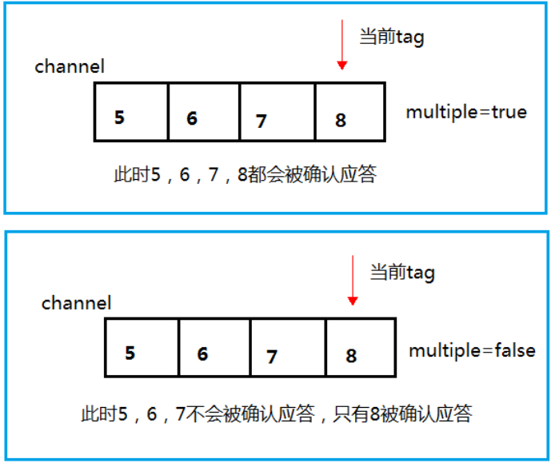
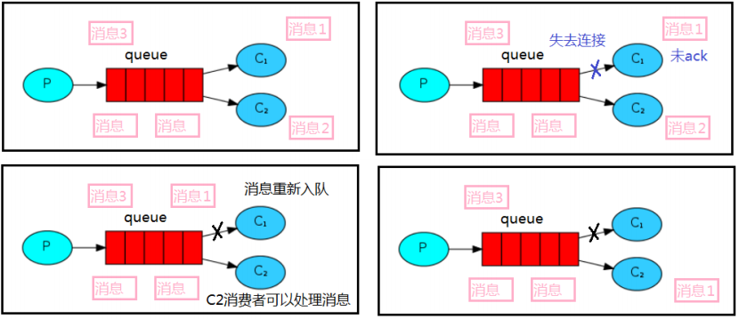

常用命令
rabbitMQ启动
1 systemctl start rabbitmq-server
查看rabbitMQ状态
1 systemctl status rabbitmq-server
rabbitMQ关闭
1 systemctl stop rabbitmq-server
web界面
1 http://192.168.246.130:15672/
创建账号
rabbitmqctl add_user admin 123456
设置用户角色
rabbitmqctl set_user_tags admin administrator
设置用户权限
rabbitmqctl set_permissions -p “/” admin “." ". ” “.*”
当前用户和角色
rabbitmqctl list_users
关系图
参数说明
1 2 3 4 5 6 7 8 9 10 11 12 13 14 15 16 17 18 19 20 21 22 23 24 25 26 27 28 29 30 31 32 33 34 35 36 37 38 39 40 channel.queueDeclare(QUEUE_NAME,false ,false ,false ,null ); String message="hello world" ; channel.basicPublish("" ,QUEUE_NAME,null ,message.getBytes()); System.out.println("消息发送完毕" ); DeliverCallback deliverCallback = (consumerTag, delivery)->{ String message= new String (delivery.getBody()); System.out.println(message); }; CancelCallback cancelCallback = (consumerTag)->{ System.out.println("消息消费被中断" ); }; channel.basicConsume(QUEUE_NAME,true ,deliverCallback,cancelCallback);
Work Queues
生产者提供消息到消息队列中，消费者可以去获取队列中的消息。在工作队列中默认采用轮询分发的方式将消息分发给消费者。所谓轮询分发，就是指不管消费者处理消息的速度是快是慢，都按照顺序轮流把消息发给消费者。
生产者
1 2 3 4 5 6 7 8 9 10 11 12 13 14 15 16 public class Task01 { private final static String QUEUE_NAME = "hello" ; public static void main (String[] args) throws Exception { Channel channel = RabbitMQUtils.getChannel(); channel.queueDeclare(QUEUE_NAME,false ,false ,false ,null ); String message="hello world" ; Scanner scanner = new Scanner (System.in); while (scanner.hasNext()){ String msg = scanner.next(); channel.basicPublish("" ,QUEUE_NAME,null ,msg.getBytes()); System.out.println("发送消息：" +msg+" 完成" ); } } }
消费者
1 2 3 4 5 6 7 8 9 10 11 12 13 14 15 16 17 18 19 20 21 22 public class Worker1 { private final static String QUEUE_NAME = "hello" ; public static void main (String[] args) throws Exception{ Channel channel = RabbitMQUtils.getChannel(); DeliverCallback deliverCallback = (consumerTag, delivery)->{ String message= new String (delivery.getBody()); System.out.println(message); }; CancelCallback cancelCallback = (consumerTag)->{ System.out.println(consumerTag + "消息消费被中断" ); }; System.out.println("c2等待接收消息" ); channel.basicConsume(QUEUE_NAME,true ,deliverCallback,cancelCallback); } }
消息手动应答
1. 消息应答
消费者完成一个任务可能需要一段时间，如果其中一个消费者处理一个长的任务并仅只完成了部分突然它挂掉了，会发生什么情况。RabbitMQ 一旦向消费者传递了一条消息，便立即将该消息标记为删除。在这种情况下，突然有个消费者挂掉了，我们将丢失正在处理的消息。以及后续发送给该消费这的消息，因为它无法接收到。
为了保证消息在发送过程中不丢失，rabbitmq 引入消息应答机制，消息应答就是:消费者在接收到消息并且处理该消息之后，告诉 rabbitmq 它已经处理了，rabbitmq 可以把该消息删除了
2. 自动应答
消息发送后立即被认为已经传送成功，这种模式需要在高吞吐量和数据传输安全性方面做权衡 ,因为这种模式如果消息在接收到之前，消费者那边出现连接或者channel 关闭，那么消息就丢失了,当然另一方面这种模式消费者那边可以传递过载的消息，没有对传递的消息数量进行限制 ，当然这样有可能使得消费者这边由于接收太多还来不及处理的消息，导致这些消息的积压，最终使得内存耗尽，最终这些消费者线程被操作系统杀死，所以这种模式仅适用在消费者可以高效并以某种速率能够处理这些消息的情况下使用 。
3. 消息应答的方法
RabbitMQ 已知道该消息并且成功的处理消息，可以将其丢弃了
Channel.basicNack(用于否定确认)
Channel.basicReject(用于否定确认)
与 Channel.basicNack 相比少一个参数，不处理该消息了直接拒绝，可以将其丢弃了
1 channel.basicAck(delivery.getEnvelope().getDeliveryTag(),false );
关于第二个参数multiple
true 代表批量应答 channel 上未应答的消息比如说 channel 上有传送 tag 的消息 5,6,7,8 当前 tag 是 8 那么此时 5-8 的这些还未应答的消息都会被确认收到消息应答
false 同上面相比只会应答 tag=8 的消息 5,6,7 这三个消息依然不会被确认收到消息应答

4. 消息重新入队
如果消费者由于某些原因失去连接(其通道已关闭，连接已关闭或 TCP 连接丢失)，导致消息未发送 ACK 确认，RabbitMQ 将了解到消息未完全处理，并将对其重新排队。如果此时其他消费者可以处理，它将很快将其重新分发给另一个消费者。这样，即使某个消费者偶尔死亡，也可以确保不会丢失任何消息。

消费者手动应答
1 2 3 4 5 6 7 8 9 10 11 12 13 14 15 16 17 18 19 20 21 22 23 24 25 26 27 28 29 30 31 32 33 public class Worker2 { private final static String TASK_QUEUE1 = "task_queue1" ; public static void main (String[] args) throws Exception{ Channel channel = RabbitMQUtils.getChannel(); DeliverCallback deliverCallback = (consumerTag, delivery)->{ String message= new String (delivery.getBody()); System.out.println("c1接收到了消息: " +message+"正在处理..." ); try { Thread.sleep(1000 ); } catch (InterruptedException e) { e.printStackTrace(); } channel.basicAck(delivery.getEnvelope().getDeliveryTag(),false ); System.out.println("业务逻辑处理完成,完成手动应答" ); }; CancelCallback cancelCallback = (consumerTag)->{ System.out.println(consumerTag + "消息消费被中断" ); }; boolean autoAck = false ; System.out.println("c1等待接收消息..." ); channel.basicConsume(TASK_QUEUE1,autoAck,deliverCallback,cancelCallback); } }
1 2 3 4 5 6 7 8 9 10 11 12 13 14 15 16 17 18 19 20 21 22 23 24 25 26 27 28 29 30 31 32 33 34 35 36 public class Worker3 { private final static String TASK_QUEUE1 = "task_queue1" ; public static void main (String[] args) throws Exception{ Channel channel = RabbitMQUtils.getChannel(); DeliverCallback deliverCallback = (consumerTag, delivery)->{ String message= new String (delivery.getBody()); System.out.println("c2接收到了消息: " +message+"正在处理..." ); try { Thread.sleep(1000 * 30 ); } catch (InterruptedException e) { e.printStackTrace(); } channel.basicAck(delivery.getEnvelope().getDeliveryTag(),false ); System.out.println("业务逻辑处理完成,完成手动应答" ); }; CancelCallback cancelCallback = (consumerTag)->{ System.out.println(consumerTag + "消息消费被中断" ); }; boolean autoAck = false ; System.out.println("c2等待接收消息..." ); channel.basicConsume(TASK_QUEUE1,autoAck,deliverCallback,cancelCallback); } }
生产者
消费者c1
消费者c2
如上，消费者c1处理消息的用时远低于消费者c2,在生产者发送完消息DD后，c2收到了消息并进行处理，在这个过程当中断开c2的连接，此时由于c2并没有给出应答，消息并没有丢失，而是重新回到了队列当中，分配给了消费者c1进行处理
RabbitMQ持久化
默认未开启持久化的情况下，RabbitMQ重启后队列会消失
1. 队列持久化
1 2 3 channel.queueDeclare(QUEUE_NAME,durable,false ,false ,null );
2. 消息持久化
1 2 channel.basicPublish("" ,TASK_QUEUE1,MessageProperties.PERSISTENT_TEXT_PLAIN,msg.getBytes());
3. 不公平分发
1 2 3 int prefetch = 1 ;channel.basicQos(prefetch);
不设置 basicQos的话(默认0)是一次性平均分发给所有的队列，设置之后限制了一次分发消息的数量，再设置手动确认机制，这样在你没有提交已经处理好的消息的时候是不会给你分发消息的。实现的不公平分发。
4. 欲取值
本身消息的发送就是异步发送的，所以在任何时候，channel上肯定不止只有一个消息另外来自消费者的手动确认本质上也是异步的。因此这里就存在一个未确认的消息缓冲区，因此希望开发人员能限制此缓冲区的大小，以避免缓冲区里面无限制的未确认消息问题。这个时候就可以通过使用channel.basicqos()方法设置“预取计数”值来完成的。该值定义通道上允许的未确认消息的最大数量(默认是0，表示无限大)。一旦数量达到配置的数量，RabbitMQ将停止在通道上传递更多消息，除非至少有一个未处理的消息被确认例如，假设在通道上有未确认的消息 5、6、7，8，并且通道的预取计数设置为4，此时RabbitMQ将不会在该通道上再传递任何消息，除非至少有一个未应答的消息被ack。比方说tag=6这个消息刚刚被确认ACK，RabbitMQ将会感知这个情况到并再发送一条消息
发布确认
生产者将信道设置成confirm模式，一旦信道进入confirm模式，所有在该信道上面发布的消息都将会被指派一个唯一的 ID(从 1 开始)，一旦消息被投递到所有匹配的队列之后，broker就会发送一个确认给生产者(包含消息的唯一ID)，这就使得生产者知道消息已经正确到达目的队列了，如果消息和队列是可持久化的，那么确认消息会在将消息写入磁盘之后发出 ，broker 回传给生产者的确认消息中delivery-tag域包含了确认消息的序列号，此外broker也可以设置basic.ack的multiple 域，表示到这个序列号之前的所有消息都已经得到了处理
1. 开启确认发布
1 2 3 channel.confirmSelect();
2. 单个确认发布
这是一种简单的确认方式，它是一种同步确认发布 的方式，也就是发布一个消息之后只有它被确认发布，后续的消息才能继续发布,waitForConfirmsOrDie(long)这个方法只有在消息被确认的时候才返回，如果在指定时间范围内这个消息没有被确认那么它将抛出异常。
这种确认方式有一个最大的缺点就是:发布速度特别的慢，因为如果没有确认发布的消息就会阻塞所有后续消息的发布 ，这种方式最多提供每秒不超过数百条发布消息的吞吐量
1 2 3 4 5 6 7 8 9 10 11 12 13 14 15 16 17 18 19 20 21 22 23 24 25 26 27 28 public class Task03 { public static final String TASK_QUEUE2 = "task_queue2" ; public static void main (String[] args) throws Exception { Channel channel = RabbitMQUtils.getChannel(); channel.queueDeclare(TASK_QUEUE2,true ,false ,false ,null ); channel.confirmSelect(); long begin = System.currentTimeMillis(); for (int i = 0 ; i < 1000 ; i++) { String message = i + "" ; channel.basicPublish("" ,TASK_QUEUE2, MessageProperties.PERSISTENT_TEXT_PLAIN,message.getBytes()); boolean confirms = channel.waitForConfirms(); if (confirms){ System.out.println("消息发送成功" ); } } long end = System.currentTimeMillis(); System.out.println("单个确认发布发送1000条消息用时用时:" +(end-begin)); } }
3. 批量确认发布
先发布一批消息然后一起确认 可以极大地提高吞吐量，当然这种方式的缺点就是:当发生故障导致发布出现问题时，不知道是哪个消息出现问题了 ，我们必须将整个批处理保存在内存中，以记录重要的信息而后重新发布消息。当然这种方案仍然是同步 的，也一样阻塞消息的发布
1 2 3 4 5 6 7 8 9 10 11 12 13 14 15 16 17 18 19 20 21 22 23 24 25 26 27 28 29 30 31 public class BatchTask { public static final String TASK_QUEUE3 = "task_queue3" ; public static void main (String[] args) throws Exception { Channel channel = RabbitMQUtils.getChannel(); channel.queueDeclare(TASK_QUEUE3,true ,false ,false ,null ); channel.confirmSelect(); int batchSize = 100 ; long begin = System.currentTimeMillis(); for (int i = 0 ; i < 1000 ; i++) { String message = i + "" ; channel.basicPublish("" ,TASK_QUEUE3, MessageProperties.PERSISTENT_TEXT_PLAIN,message.getBytes()); if (i % batchSize == 0 ){ boolean confirms = channel.waitForConfirms(); if (confirms){ System.out.println("100条消息发送成功" ); } } } long end = System.currentTimeMillis(); System.out.println("批量确认发布发送1000条消息用时用时:" +(end-begin)); } }
4. 异步确认发布
1 2 3 4 5 6 7 8 9 10 11 12 13 14 15 16 17 18 19 20 21 22 23 24 25 26 27 28 29 30 31 32 33 34 35 36 37 38 39 40 41 42 43 44 45 46 47 48 49 50 51 52 53 54 public class AsyncTask { public static final String TASK_QUEUE4 = "task_queue4" ; public static void main (String[] args) throws Exception { Channel channel = RabbitMQUtils.getChannel(); channel.queueDeclare(TASK_QUEUE4,true ,false ,false ,null ); channel.confirmSelect(); ConcurrentSkipListMap<Long,String> outStandingConfirmed = new ConcurrentSkipListMap <>(); ConfirmCallback ackCallback = (deliveryTag,multiple) -> { if (multiple){ ConcurrentNavigableMap<Long, String> headMap = outStandingConfirmed.headMap(deliveryTag); headMap.clear(); }else { outStandingConfirmed.remove(deliveryTag); } System.out.println("发布成功" +deliveryTag); }; ConfirmCallback nackCallback = (deliveryTag,multiple) ->{ String tag = outStandingConfirmed.get(deliveryTag); System.out.println("tag-" +tag+" 消息发布失败" ); }; channel.addConfirmListener(ackCallback,nackCallback); long begin = System.currentTimeMillis(); for (int i = 0 ; i < 1000 ; i++) { String message = i + "" ; channel.basicPublish("" ,TASK_QUEUE4, MessageProperties.PERSISTENT_TEXT_PLAIN,message.getBytes()); outStandingConfirmed.put(channel.getNextPublishSeqNo(),message); } long end = System.currentTimeMillis(); System.out.println("异步确认发布发送1000条消息用时用时:" +(end-begin)); } }
交换机
1. 发布/订阅模式
2. exchanges
RabbitMQ 消息传递模型的核心思想是: 生产者生产的消息从不会直接发送到队列 。实际上，通常生产者甚至都不知道这些消息传递传递到了哪些队列中。相反，生产者只能将消息发送到交换机(exchange) ，交换机工作的内容非常简单，一方面它接收来自生产者的消息，另一方面将它们推入队列。交换机必须确切知道如何处理收到的消息。是应该把这些消息放到特定队列还是说把他们到许多队列中还是说应该丢弃它们。这就的由交换机的类型来决定
Exchanges 的类型
直接(direct)
主题(topic)
标题(headers)
扇出(fanout)
1 2 channel.queueDeclare().gerQueue()
binding
binding 其实是 exchange 和 queue 之间的桥梁，它告诉我们 exchange 和那个队列进行了绑定关系
3. Fanout
fanout类型的Exchange路由规则非常简单，它会把所有发送到该Exchange的消息路由到所有与它绑定的Queue中，所以此时routing key是不起作用的
注意：由于使用fanout类型的交换机时，routing key是不起作用的，所以代码中生产者发送消息、消费者中交换机与队列绑定时，routing key设置的都是空字符串，可以将routing key改为任意值，消费者都还是可以收到消息的。
1 2 3 4 5 6 7 8 9 10 11 12 13 14 15 16 17 18 19 20 public class FanoutProducer { private static final String FANOUT_EXCHANGE_NAME = "fanout_exchange" ; public static void main (String[] args) throws Exception { Channel channel = RabbitMQUtils.getChannel(); channel.exchangeDeclare(FANOUT_EXCHANGE_NAME, BuiltinExchangeType.FANOUT); Scanner scanner = new Scanner (System.in); while (scanner.hasNext()){ String message = scanner.next(); channel.basicPublish(FANOUT_EXCHANGE_NAME,"" ,null ,message.getBytes()); System.out.println(message+"发送成功" ); } } }
1 2 3 4 5 6 7 8 9 10 11 12 13 14 15 16 17 18 19 20 21 22 23 24 25 26 27 28 29 30 31 public class FanoutConsumer1 { private static final String FANOUT_EXCHANGE_NAME = "fanout_exchange" ; public static void main (String[] args) throws Exception { Channel channel = RabbitMQUtils.getChannel(); channel.exchangeDeclare(FANOUT_EXCHANGE_NAME, BuiltinExchangeType.FANOUT); String queue = channel.queueDeclare().getQueue(); channel.queueBind(queue,FANOUT_EXCHANGE_NAME,"" ); DeliverCallback ackCallback = (consumerTag,message) ->{ String msg= new String (message.getBody()); System.out.println("FanoutConsumer1收到了消息: " +msg); }; CancelCallback nackCallback = (consumerTag) ->{ System.out.println("FanoutConsumer1接收消息中断" ); }; channel.basicConsume(queue,true ,ackCallback,nackCallback); } }
4. Direct
1 2 3 4 5 6 7 8 9 10 11 12 13 14 15 16 17 18 19 20 21 public class DirectProducer { private static final String DIRECT_EXCHANGE_NAME = "direct_exchange" ; public static void main (String[] args) throws Exception { Channel channel = RabbitMQUtils.getChannel(); channel.exchangeDeclare(DIRECT_EXCHANGE_NAME, BuiltinExchangeType.DIRECT); Scanner scanner = new Scanner (System.in); while (scanner.hasNext()){ String message = scanner.next(); channel.basicPublish(DIRECT_EXCHANGE_NAME,"queue2_key2" ,null ,message.getBytes()); System.out.println(message+"发送成功" ); } } }
1 2 3 4 5 6 7 8 9 10 11 12 13 14 15 16 17 18 19 20 21 22 23 24 25 26 27 28 29 30 31 public class DirectConsumer1 { private static final String DIRECT_EXCHANGE_NAME = "direct_exchange" ; public static void main (String[] args) throws Exception { Channel channel = RabbitMQUtils.getChannel(); channel.exchangeDeclare(DIRECT_EXCHANGE_NAME, BuiltinExchangeType.DIRECT); channel.queueDeclare("queue1" ,false ,false ,false ,null ); channel.queueBind("queue1" ,DIRECT_EXCHANGE_NAME,"queue1_key1" ); DeliverCallback ackCallback = (consumerTag, message) ->{ String msg= new String (message.getBody()); System.out.println("DirectConsumer1收到了消息: " +msg); }; CancelCallback nackCallback = (consumerTag) ->{ System.out.println("DirectConsumer1接收消息中断" ); }; channel.basicConsume("queue1" ,true ,ackCallback,nackCallback); } }
1 2 3 4 5 6 7 8 9 10 11 12 13 14 15 16 17 18 19 20 21 22 23 24 25 26 27 28 29 30 31 32 33 public class DirectConsumer2 { private static final String DIRECT_EXCHANGE_NAME = "direct_exchange" ; public static void main (String[] args) throws Exception { Channel channel = RabbitMQUtils.getChannel(); channel.exchangeDeclare(DIRECT_EXCHANGE_NAME, BuiltinExchangeType.DIRECT); channel.queueDeclare("queue2" ,false ,false ,false ,null ); channel.queueBind("queue2" ,DIRECT_EXCHANGE_NAME,"queue2_key1" ); channel.queueBind("queue2" ,DIRECT_EXCHANGE_NAME,"queue2_key2" ); DeliverCallback ackCallback = (consumerTag, message) ->{ String msg= new String (message.getBody()); System.out.println("DirectConsumer2收到了消息: " +msg); }; CancelCallback nackCallback = (consumerTag) -> { System.out.println("DirectConsumer2接收消息中断" ); }; channel.basicConsume("queue2" ,true ,ackCallback,nackCallback); } }
多重绑定：
当然如果 exchange 的绑定类型是 direct，但是它绑定的多个队列的 key 如果都相同，在这种情况下虽然绑定类型是 direct 但是它表现的就和 fanout 有点类似了，就跟广播差不多
此外,若消息的routingKey不满足任何binding的routingKey，那么该消息会被直接丢弃
5. Topic
发送到topic交换机的消息不能具有任意的 routing_key —— 它必须是由点分隔的单词列表。单词可以是任何内容，但通常它们指定与消息相关的一些功能。一些有效的路由键示例：“ stock.usd.nyse ”，“ nyse.vmw ”，“ quick.orange.rabbit ”。其中可以包含任意数量的单词，最多可达255个字节。
binding key也必须采用相同的形式。topic交换机背后的逻辑 类似于direct交换机——使用特定 routing key 发送的消息将被传递到与匹配binding key绑定的所有队列。但是binding key有两个重要的特殊情况：
*（星号）可以替代一个 单词。
＃（hash）可以替换零个 或多个 单词。
例如：
quick.orange.rabbit 被队列 Q1Q2 接收到
lazy.orange.elephant 被队列 Q1Q2 接收到
lazy.brown.fox 被队列 Q2 接收到
quick.orange.fox 被队列 Q1 接收到
lazy.pink.rabbit 虽然满足两个绑定但只被队列 Q2 接收一次
quick.brown.fox 不匹配任何绑定不会被任何队列接收到会被丢弃
quick.orange.male.rabbit 是四个单词不匹配任何绑定会被丢弃
lazy.orange.male.rabbit 是四个单词但匹配 Q2
注意：主题类型的转发器非常强大，可以实现其他类型的转发器。
当一个队列与绑定键#绑定，将会收到所有的消息，类似fanout类型转发器
当绑定键中不包含任何#与*时，类似direct类型转发器
1 2 3 4 5 6 7 8 9 10 11 12 13 14 15 16 17 18 19 20 21 22 23 24 25 26 27 28 29 public class TopicProducer { private static final String TOPIC_EXCHANGE_NAME = "topic_exchange" ; public static void main (String[] args) throws Exception { Channel channel = RabbitMQUtils.getChannel(); channel.exchangeDeclare(TOPIC_EXCHANGE_NAME, BuiltinExchangeType.TOPIC); HashMap<String,String> bindingMap = new HashMap <>(); bindingMap.put("quick.orange.rabbit" ,"被队列 Q1Q2 接收到" ); bindingMap.put("lazy.orange.elephant" ,"被队列 Q1Q2 接收到" ); bindingMap.put("quick.orange.fox" ,"被队列 Q1 接收到" ); bindingMap.put("lazy.brown.fox" ,"被队列 Q2 接收到" ); bindingMap.put("lazy.pink.rabbit" ,"虽然满足两个绑定但只被队列 Q2 接收一次" ); bindingMap.put("quick.brown.fox" ,"不匹配任何绑定不会被任何队列接收到会被丢弃" ); bindingMap.put("quick.orange.male.rabbit" ,"是四个单词不匹配任何绑定会被丢弃" ); bindingMap.put("lazy.orange.male.rabbit" ,"是四个单词但匹配 Q2" ); for (Map.Entry<String, String> entry : bindingMap.entrySet()) { String routingKey = entry.getKey(); String message = entry.getValue(); channel.basicPublish(TOPIC_EXCHANGE_NAME,routingKey,null ,message.getBytes(StandardCharsets.UTF_8)); System.out.println("发送了" +message); } } }
1 2 3 4 5 6 7 8 9 10 11 12 13 14 15 16 17 18 19 20 21 22 23 24 25 26 27 28 public class TopicConsumer1 { private static final String TOPIC_EXCHANGE_NAME = "topic_exchange" ; public static void main (String[] args) throws Exception { Channel channel = RabbitMQUtils.getChannel(); channel.exchangeDeclare(TOPIC_EXCHANGE_NAME, BuiltinExchangeType.TOPIC); channel.queueDeclare("Q1" ,false ,false ,false ,null ); channel.queueBind("Q1" ,TOPIC_EXCHANGE_NAME,"*.orange.*" ); DeliverCallback ackCallback = (consumerTag, message) ->{ String msg= new String (message.getBody()); System.out.println("TopicConsumer1收到了消息: " +msg); System.out.println("routingKey: " + message.getEnvelope().getRoutingKey()); }; CancelCallback nackCallback = (consumerTag) ->{ System.out.println("TopicConsumer1接收消息中断" ); }; channel.basicConsume("Q1" ,true ,ackCallback,nackCallback); } }
1 2 3 4 5 6 7 8 9 10 11 12 13 14 15 16 17 18 19 20 21 22 23 24 25 26 27 28 public class TopicConsumer2 { private static final String TOPIC_EXCHANGE_NAME = "topic_exchange" ; public static void main (String[] args) throws Exception { Channel channel = RabbitMQUtils.getChannel(); channel.exchangeDeclare(TOPIC_EXCHANGE_NAME, BuiltinExchangeType.TOPIC); channel.queueDeclare("Q2" ,false ,false ,false ,null ); channel.queueBind("Q2" ,TOPIC_EXCHANGE_NAME,"*.*.rabbit" ); channel.queueBind("Q2" ,TOPIC_EXCHANGE_NAME,"lazy.#" ); DeliverCallback ackCallback = (consumerTag, message) ->{ String msg= new String (message.getBody()); System.out.println("TopicConsumer2收到了消息: " +msg); System.out.println("routingKey: " + message.getEnvelope().getRoutingKey()); }; CancelCallback nackCallback = (consumerTag) ->{ System.out.println("TopicConsumer2接收消息中断" ); }; channel.basicConsume("Q2" ,true ,ackCallback,nackCallback); } }
死信队列
1. 死信
一般来说，producer 将消息投递到 broker 或者直接到 queue 里了，consumer 从 queue 取出消息进行消费，但某些时候由于特定的原因导致 queue 中的某些消息无法被消费 ，这样的消息如果没有后续的处理，就变成了死信，有死信自然就有了死信队列
死信来源：
一些概念：
DLX : Dead Letter Exchagne： 死信交换机， 特殊的一种交换机
DLK： Dead Letter Routing-Key： 死信路由， 特殊的路由，和DLX组成死信队列
TTL : Time to Live，进入死信队列的消息存活时间，TTL后，消息Dead，进入下一个中转站，等待消费
x-dead-letter-exchange：出现dead letter之后将dead letter重新发送到指定exchange
x-dead-letter-routing-key：出现dead letter之后将dead letter重新按照指定的routing-key发送(相当于消息在死信交换机发送时也需要知道一个routingKey,上面两个参数可以理解为dead letter从normal queue中转发出来后 类似于basicPublish()的第1,2个参数)
2. 消息TTL过期
1 2 3 4 5 6 7 8 9 10 11 12 13 14 15 16 17 18 public class Producer { private static final String NORMAL_EXCHANGE_NAME = "normal_exchange" ; public static void main (String[] args) throws Exception { Channel channel = RabbitMQUtils.getChannel(); AMQP.BasicProperties properties = new AMQP .BasicProperties() .builder().expiration("10000" ).build(); for (int i = 0 ; i < 10 ; i++) { String message = "msg" + i; channel.basicPublish(NORMAL_EXCHANGE_NAME,"zhangsan" ,properties,message.getBytes()); } } }
1 2 3 4 5 6 7 8 9 10 11 12 13 14 15 16 17 18 19 20 21 22 23 24 25 26 27 28 29 30 31 32 33 34 35 36 37 38 39 40 41 42 43 44 45 46 47 public class Consumer1 { private static final String NORMAL_EXCHANGE_NAME = "normal_exchange" ; private static final String DEAD_EXCHANGE_NAME = "dead_exchange" ; private static final String NORMAL_QUEUE = "normal_queue" ; private static final String DEAD_QUEUE = "dead_queue" ; public static void main (String[] args) throws Exception { Channel channel = RabbitMQUtils.getChannel(); channel.exchangeDeclare(NORMAL_EXCHANGE_NAME, BuiltinExchangeType.DIRECT); channel.exchangeDeclare(DEAD_EXCHANGE_NAME,BuiltinExchangeType.DIRECT); HashMap<String,Object> arguments = new HashMap <>(); arguments.put("x-dead-letter-exchange" ,DEAD_EXCHANGE_NAME); arguments.put("x-dead-letter-routing-key" ,"lisi" ); channel.queueDeclare(NORMAL_QUEUE,false ,false ,false ,arguments); channel.queueDeclare(DEAD_QUEUE,false ,false ,false ,null ); channel.queueBind(NORMAL_QUEUE,NORMAL_EXCHANGE_NAME,"zhangsan" ); channel.queueBind(DEAD_QUEUE,DEAD_EXCHANGE_NAME,"lisi" ); DeliverCallback ackCallback = (consumerTag, message) ->{ String msg= new String (message.getBody()); System.out.println("Consumer1收到了消息: " +msg); }; CancelCallback nackCallback = (consumerTag) -> { System.out.println("Consumer1接收消息中断" ); }; channel.basicConsume(NORMAL_QUEUE,true ,ackCallback,nackCallback); } }
1 2 3 4 5 6 7 8 9 10 11 12 13 14 15 16 17 18 19 20 21 22 23 24 public class Consumer2 { private static final String DEAD_QUEUE = "dead_queue" ; public static void main (String[] args) throws Exception { Channel channel = RabbitMQUtils.getChannel(); DeliverCallback ackCallback = (consumerTag, message) ->{ String msg= new String (message.getBody()); System.out.println("Consumer2收到了消息: " +msg); }; CancelCallback nackCallback = (consumerTag) -> { System.out.println("Consumer2接收消息中断" ); }; channel.basicConsume(DEAD_QUEUE,true ,ackCallback,nackCallback); } }
3. 队列达到最大长度
1 2 3 4 5 6 7 8 9 10 11 12 13 14 public class Producer { private static final String NORMAL_EXCHANGE_NAME = "normal_exchange" ; public static void main (String[] args) throws Exception { Channel channel = RabbitMQUtils.getChannel(); for (int i = 0 ; i < 10 ; i++) { String message = "msg" + i; channel.basicPublish(NORMAL_EXCHANGE_NAME,"zhangsan" ,null ,message.getBytes()); } } }
1 2 3 4 arguments.put("x-max-length" ,6 );
4. 消息被拒绝
1 2 3 4 5 6 7 8 9 10 11 12 13 14 15 16 17 18 19 20 21 22 23 arguments.put("x-max-length" ,6 ); DeliverCallback ackCallback = (consumerTag, message) ->{ String msg= new String (message.getBody()); if ("msg2" .equals(msg)){ channel.basicReject(message.getEnvelope().getDeliveryTag(),false ); System.out.println("Consumer1收到了消息msg2但是拒绝了" ); }else { channel.basicAck(message.getEnvelope().getDeliveryTag(),false ); System.out.println("Consumer1收到了消息: " +msg); } }; CancelCallback nackCallback = (consumerTag) -> { System.out.println("Consumer1接收消息中断" ); }; channel.basicConsume(NORMAL_QUEUE,false ,ackCallback,nackCallback);
运行结果：
延迟队列
延时队列,队列内部是有序的，最重要的特性就体现在它的延时属性上，延时队列中的元素是希望在指定时间到了以后或之前取出和处理，简单来说，延时队列就是用来存放需要在指定时间被处理的元素的队列
1. 基于死信
对于每条消息进行延迟
存在的问题：
如果使用在消息属性上设置 TTL 的方式，消息可能并不会按时“死亡“，因为 RabbitMQ 只会检查第一个消息是否过期 ，如果过期则丢到死信队列，如果第一个消息的延时时长很长，而第二个消息的延时时长很短，第二个消息并不会优先得到执行
2. 基于插件
在交换机进行延迟(存在延迟交换机)
在我们自定义的交换机中，这是一种新的交换类型，该类型消息支持延迟投递机制 消息传递后并不会立即投递到目标队列中，而是存储在 mnesia(一个分布式数据系统)表中，当达到投递时间时，才投递到目标队列中
1 2 3 4 5 6 7 8 9 10 11 12 13 14 15 16 17 18 19 20 21 22 23 24 25 26 27 28 29 30 31 32 33 @Configuration public class DelayQueueConfig { private static final String DELAY_EXCHANGE_NAME = "delay_exchange" ; private static final String DELAY_QUEUE = "delay_queue" ; private static final String DELAY_ROUTING_KEY = "delay_routingKey" ; @Bean public CustomExchange delayExchange () { HashMap<String,Object> args = new HashMap <>(); args.put("x-delayed-type" , "direct" ); return new CustomExchange (DELAY_EXCHANGE_NAME,"x-delayed-message" ,true ,false ,args); } @Bean public Queue delayQueue () { return new Queue (DELAY_QUEUE); } @Bean public Binding bindingDelayExchangeAndQueue (CustomExchange delayExchange, Queue delayQueue) { return BindingBuilder.bind(delayQueue).to(delayExchange).with(DELAY_ROUTING_KEY).noargs(); } }
1 2 3 4 5 6 7 8 9 10 11 12 13 14 15 16 17 18 19 20 21 22 23 24 25 @RestController @Slf4j public class DelayProducer { private static final String DELAY_EXCHANGE_NAME = "delay_exchange" ; private static final String DELAY_ROUTING_KEY = "delay_routingKey" ; @Autowired private RabbitTemplate rabbitTemplate; @GetMapping("sendDelayMsg/{message}/{delayTime}") public void sendMsg (@PathVariable String message, @PathVariable Integer delayTime) { rabbitTemplate.convertAndSend(DELAY_EXCHANGE_NAME, DELAY_ROUTING_KEY, message, correlationData ->{ correlationData.getMessageProperties().setDelay(delayTime); return correlationData; }); log.info(" 当 前 时 间 ： {}, 发送一条延迟 {} 毫秒的信息给队列 delayed.queue:{}" , new Date (),delayTime, message); } }
1 2 3 4 5 6 7 8 9 10 11 12 13 14 @Component @Slf4j public class DelayConsumer { private static final String DELAY_QUEUE = "delay_queue" ; @RabbitListener(queues = DELAY_QUEUE) public void receiveDelayedQueue (Message message) { String msg = new String (message.getBody()); log.info("当前时间：{},收到延时队列的消息：{}" , new Date ().toString(), msg); } }
1 2 3 分别发送一条20s延迟的消息和2s延迟的消息 http://localhost:8080/sendDelayMsg/msg20/20000 http://localhost:8080/sendDelayMsg/msg22/20000
1 2 3 4 5 //消息正确延迟投递 当前时间 Tue Nov 08 21:36:04 CST 2022, 发送一条延迟 20000 毫秒的信息给队列 delayed.queue:msg20 当前时间 Tue Nov 08 21:36:13 CST 2022, 发送一条延迟 2000 毫秒的信息给队列 delayed.queue:msg2 当前时间 Tue Nov 08 21:36:15 CST 2022,收到延时队列的消息：msg2 当前时间 Tue Nov 08 21:36:23 CST 2022,收到延时队列的消息：msg20
发布确认高级
一些补充知识：
关于@postConstruct
在Spring容器刷新创建bean实例时会构建bean生命周期元数据，在元数据中会保存@PostConstruct和@PreDestroy注解修饰的方法，然后在bean属性赋值阶段会进行bean的依赖注入检查如果依赖的bean没有被创建则会创建依赖的bean并进行依赖注入，最后在bean的初始化过程中会执行postProcessBeforeInitialization方法，该方法在bean初始化之前执行，postProcessBeforeInitialization该方法会通过bean的声明周期元数据通过反射进行方法调用，这就实@PostConstruct注解的原理
1. 将无法正确路由的消息返回给生产者
2. 将无法正确路由的消息发给备份交换机
1 2 3 4 5 6 spring: rabbitmq: publisher-confirm-type: correlated publisher-returns: true
1 2 3 4 5 6 7 8 9 10 11 12 13 14 15 16 17 18 19 20 21 22 23 24 25 26 27 28 29 30 31 32 33 34 35 36 37 38 39 40 41 42 43 44 45 46 47 48 49 50 51 52 53 54 55 56 57 58 59 60 61 62 63 @Configuration public class PublishConfirmConfig { public static final String CONFIRM_EXCHANGE = "confirm_exchange" ; public static final String CONFIRM_QUEUE = "confirm_queue" ; public static final String ROUTING_KEY = "routing_key" ; public static final String BACKUP_EXCHANGE = "backup_exchange" ; public static final String BACKUP_QUEUE = "backup_queue" ; public static final String WARNING_QUEUE = "warning_queue" ; @Bean public DirectExchange confirmExchange () { return ExchangeBuilder.directExchange(CONFIRM_EXCHANGE) .durable(true ).withArgument("alternate-exchange" ,BACKUP_EXCHANGE).build(); } @Bean public Queue confirmQueue () { return QueueBuilder.durable(CONFIRM_QUEUE).build(); } @Bean public Binding bindingConfirmQueue (DirectExchange confirmExchange, Queue confirmQueue) { return BindingBuilder.bind(confirmQueue).to(confirmExchange).with(ROUTING_KEY); } @Bean public FanoutExchange backupExchange () { return ExchangeBuilder.fanoutExchange(BACKUP_EXCHANGE).durable(true ).build(); } @Bean public Queue backupQueue () { return QueueBuilder.durable(BACKUP_QUEUE).build(); } @Bean public Queue warningQueue () { return QueueBuilder.durable(WARNING_QUEUE).build(); } @Bean public Binding bindingBackupExchangeAndBQ (FanoutExchange backupExchange, Queue backupQueue ) { return BindingBuilder.bind(backupQueue).to(backupExchange); } @Bean public Binding bindingBackupExchangeAndWQ (FanoutExchange backupExchange, Queue warningQueue ) { return BindingBuilder.bind(warningQueue).to(backupExchange); } }
1 2 3 4 5 6 7 8 9 10 11 12 13 14 15 16 17 18 19 20 21 22 23 24 25 26 27 28 29 30 31 32 33 34 35 36 37 38 39 @Component @Slf4j public class MyCallback implements RabbitTemplate .ConfirmCallback , RabbitTemplate.ReturnsCallback { @Resource private RabbitTemplate rabbitTemplate; @PostConstruct public void init () { rabbitTemplate.setConfirmCallback(this ); rabbitTemplate.setReturnsCallback(this ); } @Override public void confirm (CorrelationData correlationData, boolean ack, String cause) { String id = correlationData == null ? "" : correlationData.getId(); if (ack){ log.info("交换机收到了id为{}的消息" ,id); }else { log.error("交换机没有收到id为{}的消息,原因是{}" ,id,cause); } } @Override public void returnedMessage (ReturnedMessage returned) { log.error("消息被交换机退回,routingKey为{},错误原因为{}" ,returned.getRoutingKey(),returned.getMessage()); } }
1 2 3 4 5 6 7 8 9 10 11 12 13 14 15 16 17 18 19 @Controller @RequestMapping("/publish") @Slf4j public class Producer { @Resource private RabbitTemplate rabbitTemplate; @GetMapping("/{msg}") public void sendMessage (@PathVariable("msg") String msg) { CorrelationData correlationData = new CorrelationData ("1" ); rabbitTemplate.convertAndSend(CONFIRM_EXCHANGE,ROUTING_KEY+1 ,msg.getBytes(),correlationData); log.info("生产者发送了消息{}" ,msg); } }
1 2 3 4 5 6 7 8 9 10 11 12 13 14 15 16 17 @Component @Slf4j public class Consumer { @RabbitListener(queues = CONFIRM_QUEUE) public void receiveMessage (Message message) { String msg = new String (message.getBody()); log.info("消费者收到了消息{}" ,msg); } @RabbitListener(queues = WARNING_QUEUE) public void receiveWarningMessage (Message message) { String msg = new String (message.getBody()); log.warn("warningQueue收到了未被正确路由的消息{}" ,msg); } }
正常情况下：
修改交换机名字为错误名字,导致消息无法正确发布到指定交换机(无论消息是否成功发布到交换机,回调函数confirm()都会触发)：
使用方案1，交换机名字正确，修改routingKey为错误的routingKey，导致消息无法正确路由到指定队列(触发了returnedMessage()回调函数)：
使用方案2，交换机名字正确，修改routingKey为错误的routingKey，导致消息无法正确路由到指定队列(交换机把消息转发到了备份交换机中,由备份交换机路由到备份队列和警告队列中)：
另外
由上面也可以看到，当无法正常路由的消息回退给消费者和将无法正常路由的消息转发给备份交换机同时开启的时候，备份交换机的优先级更高
其他
1. 优先级队列
1 2 3 4 5 6 7 8 9 Map<String, Object> params = new HashMap (); params.put("x-max-priority" , 10 ); channel.queueDeclare("hello" , true , false , false , params); AMQP.BasicProperties properties = new AMQP .BasicProperties().builder().priority(5 ).build(); channel.basicPublish("" , QUEUE_NAME, properties, message.getBytes());
2. 惰性队列
惰性队列会尽可能的将消息存入磁盘中，而在消费者消费到相应的消息时才会被加载到内存中，它的一个重要的设计目标是能够支持更长的队列，即支持更多的消息存储。当消费者由于各种各样的原因(比如消费者下线、宕机亦或者是由于维护而关闭等)而致长时间内不能消费消息造成堆积时
但是惰性队列速度更慢，因为存在磁盘IO,内存中的队列仅仅存放了索引
1 2 3 4 Map<String, Object> args = new HashMap <String, Object>(); args.put("x-queue-mode" , "lazy" ); channel.queueDeclare("myqueue" , false , false , false , args);
RabbitMQ集群
懒了，暂时没记.........